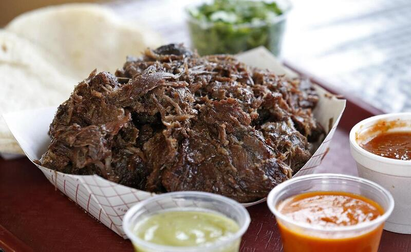

Barbacoa de labio

Deliciosa barbacoa de labio, preparada en taquitos de maíz o harina.
Ingredientes
Barbacoa
- Labio de novillo, 50gr. por taco
- Limón
- Sal yodada
- Ajo
- Oregáno coahuila
- Laurel
Salsa
- Chiles verdes
- Tomatillo
- Cilantro
- Ajo
- Sal
Preparación
- Primero, tenemos que limpiar la carne de novillo, esta
se encuentra bastante sucia, pues regularmente todavía tiene
sangre, es necesario exprimirla para que esa sangre salga.
- Haga la bolsa de ingredientes. Esta lleva cebolla, laurel y orégano
coahuila. Esta bolsa es esencial. También puede llevar jalapeño.
- Llene una olla con agua y hierva la carne, el tiempo de cocción
dependerá de cuánta carne es, pero regularmente no demora mucho si
es una pequeña cantidad.
- Prepare la salsa colocando los ingredientes en una licuadora con
suficiente agua, a la salsa se le puede agregar agua al gusto para controlar la espesidad.
- Prepare las tortillas en un comal. Las tortillas pueden ser de harína o maíz.
Luego, haga tacos con la carne de labio y la salsa verde ¡Disfrute!
Regresar al inicio